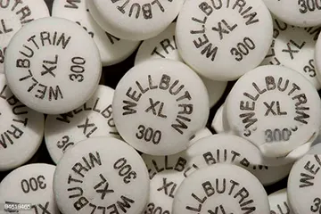
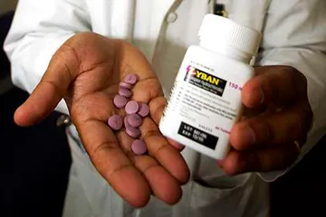

Both Wellbutrin and Zyban are manufacturer medications that may contain the same ingredient, and that is Bupropion. Bupropion can be employed the two as an antidepressant, so when an aid to giving up smoking cigarettes.
As being an antidepressant, it can be available within the manufacturers Wellbutrin, Wellbutrin SR and Wellbutrin Bupropion XL. It really is helpful to handle major despression symptoms and as well temporary efficient illness or Miserable along with various other situations.
Nobody actually knows accurately how it operates, nonetheless it is benefits result from being able to hinder the reuptake on the neurotransmitters dopamine and norepinephrine, in order to an extremely lesser magnitude, serotonin, which leads to an improvement of these compounds in the mind. These chemicals have an effect on our feelings so by increasing the levels of these significant chemicals, it is easy to reduce the signs and symptoms of depressive disorder.
Like a cigarettes support within the brand name Zyban, it seems like to figure by reducing pure nicotine yearnings plus the signs of pure nicotine withdrawal. It assists to to prevent the excess weight attain which frequently accompanies giving up smoking. Think about remember when having Zyban is always that you will need to go on it sooner within the time to support protect Bupropion against sleeping disorders at night if two dosage amounts are used 1 have to be taken 8-10 hrs following very first so web site must be adopted strawberry.
You will discover different types of products in the market aimed towards Wellbutrin (Bupropion) being able to help those that smoke break the addiction for great and stay a enjoyable, healthful living. The items vary from cigarette smoking inhaler, Wellbutrin and patches among others. These products come in useful while you believe to stop tobacco is probably a lot more than you are able to bear, and instead of enabling the habit destroy your efforts they populate the gap.
Usually people today consider the merchandise as an alternative way away from addressing the best problem of tobacco, nevertheless, you that although they might improve some they may not work for other individuals, who do not fulfill their requirements.
There are actually almost many models of Cigarette smoking substitutions out there nowadays that fluctuate in line with uniformity and results next to cigarettes. A Cigarette smoking inhaler is truly one of related product which is owned by the termination of cigarettes. Pure nicotine inhaler can be a smaller water line like unit helpful to breathe in small doasage amounts of cigarette smoking moving in the lips.
Therefore when using this piece of equipment the ingestion of pure nicotine is more slowly in comparison to an ordinary cigarette smoking. With all the nicotine inhaler needs one to suck in throughout the cartridge, props up smoking within the mouth area although nicotine watery vapor is launched on the lips and ingested by the throat and mouth textures, then you definately release the light up.
As employing this unit may seem such as an easy solution to to give up smoking, the flip side is that you could endure feeling sick if you overdose your recommended restrict, go through hmmm and it can neck to jaws tenderness too between other side results. The nicotine inhaler is beneath normal instances recommended by doctors for half dozen to 12 many days of usage however people today prolong to limit endangering them.
Wellbutrin, often known as Zyban and Bupropion is a drug normally in the formula kind as well as doesn't consist of any smoking, additionally to the next it makes easier the procedure to relinquish smoking cigarettes and to face flahbacks indicators as well. The only problem here of the method continual sensitivity end users are affected by reviewing the unwanted side effects like dry mouth, sleeping disorders and so on. Doctor's prescription for Bupropion is made for seven to 9 2 or 3 weeks to be a tool for terminating using tobacco. In particular instances nevertheless it would be lengthy for up to 6 months varying ahead of time all of them. People who have eating conditions ought not to use it too as having any drugs containing Bupropion.
May be area can Wellbutrin be a little glue area produced in the outer layer, and little by little liberating nicotine throughout the blood vessels. Regardless of where it's used, the patches have to be exchanged within just a time period of 24 hours. Nicotine Wellbutrin patches is often benefited without having pharmaceutical drug and are really simple to use very. The disadvantage involve, may be spot might cause irritability, belly disappointed, sleeping agitations. Several precautions relating to some particular skin variations has to be utilized please note of like psoriasis, meals and must be part of recommended from the health practitioner for far better final results. Individuals being affected by asthmatic health issues are hugely disappointed from previously involved in smoking.
Wellbutrin (Bupropion)
Wellbutrin is an anti depressant and that is used to treat more than just chemical or mental problems. Wellbutrin is used to treat depression, chemical imbalances, helps you kick certain drug habits, Wellburtin is also used to help some to stop smoking. Wellbutrin has been known to help those who have back pain and to treat those who have chronic fatigue problems and disorders.
Because Wellbutrin is a prescription medication you do have to tell us a bit about your medical history before you can order a prescription of Wellbutrin online. All online comments, ordering and emails are sent through secure sites where no one will be able to read your encrypted information. We protect all of our client information.
You can order a one month supply of Wellbutrin or a two or three month supply of Wellbutrin where you will find the pricing structure will save you additional money.
It is best to take Wellbutrin every four hours, and never to take more than one dose at a time. If you were to miss a dose at any particular time you just pick up with your next scheduled dose and take it from there.
Pregnant women or women who are nursing should not take Wellbutrin for any reason. You should not drink while taking Wellbutrin as this could impair your ability to drive.
What causes depression?
Depression is a medical illness believed to be caused by an imbalance of certain chemicals in the brain. There is no need to feel ashamed or guilty about a medical illness. Over 18 million Americans suffer from depression.
How does Wellbutrin treat depression?
As with other antidepressants, it is unknown exactly how Wellbutrin works. Scientists believe that Wellbutrin treats depression by affecting two chemicals in the brain called dopamine and norepinephrine. These are two of the chemicals that are believed to help regulate your mood.
Does Wellbutrin effectively treat depression?
Yes. Wellbutrin has been clinically proven to effectively treat depression. Although no one antidepressant works for everyone, Wellbutrin has been shown to work for many people.

If I am prescribed Wellbutrin for depression, what should I expect?
As with other antidepressants, Wellbutrin Tablets may take 4 weeks or longer for you to feel the effects. Often your friends and family may notice you are better before you feel it yourself. Once Wellbutrin begins to work, you may find that your mood improves, you have more energy, and your interest in activities returns.
How should I take Wellbutrin?
Take Wellbutrin as directed by your healthcare professional. Even if you feel better, keep taking Wellbutrin for as long as your healthcare professional advises. You can take Wellbutrin with or without food. Swallow tablets whole. Do not chew, divide, or crush tablets. If you miss a dose, do not double up on the next dose. Simply return to your regular schedule as soon as possible. Wait at least 8 hours between Wellbutrin doses. If you have trouble sleeping, talk to your healthcare professional about changing the time of day you take your Wellbutrin.
How long should I take Wellbutrin?
Only you and your doctor can determine how long you should take Wellbutrin. You and your doctor should discuss your signs and symptoms of depression regularly to determine how long you should take Wellbutin. Do not stop taking wellbutrin or decrease the amount of wellbutrin you are taking without talking to your doctor first.
Does Wellbutrin have a low risk of sexual side effects?
Yes. In fact, in clinical studies in depressed patients, the rates of orgasm dysfunction in patients taking Wellbutrin were not significantly different from those of patients taking a placebo (ie, sugar pill) (10%-15% vs. 9%-14%, respectively). In other clinical studies, few patients reported impotence or decreased libido while taking Wellbutrin (less than 1% and 0%, respectively).